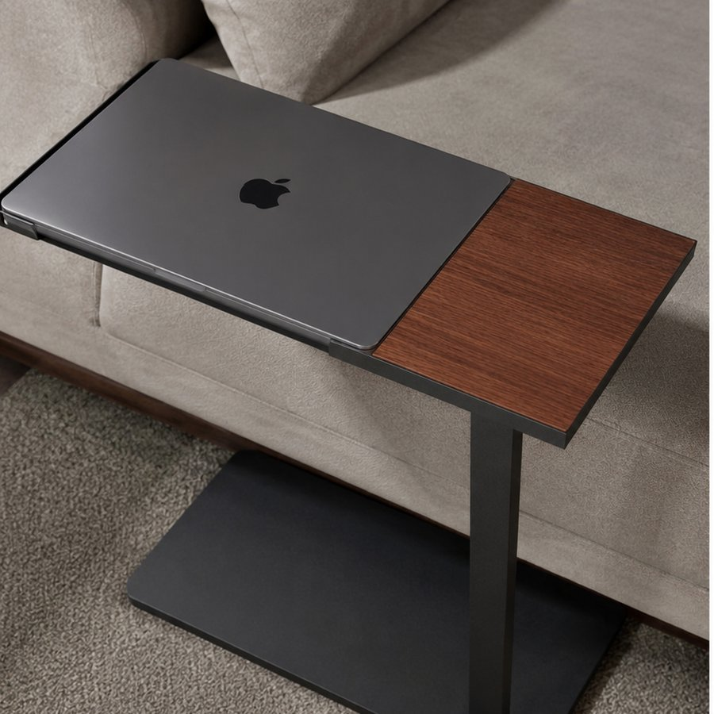
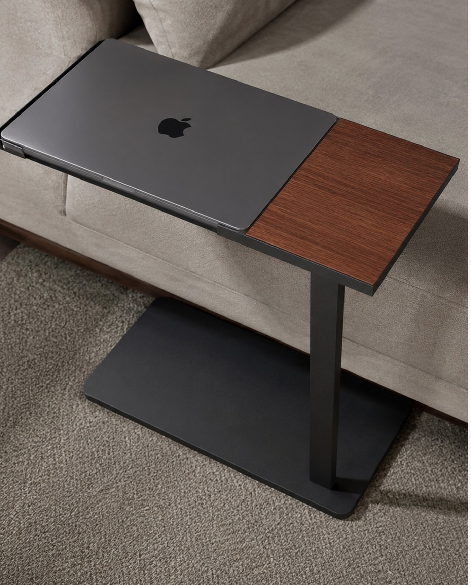
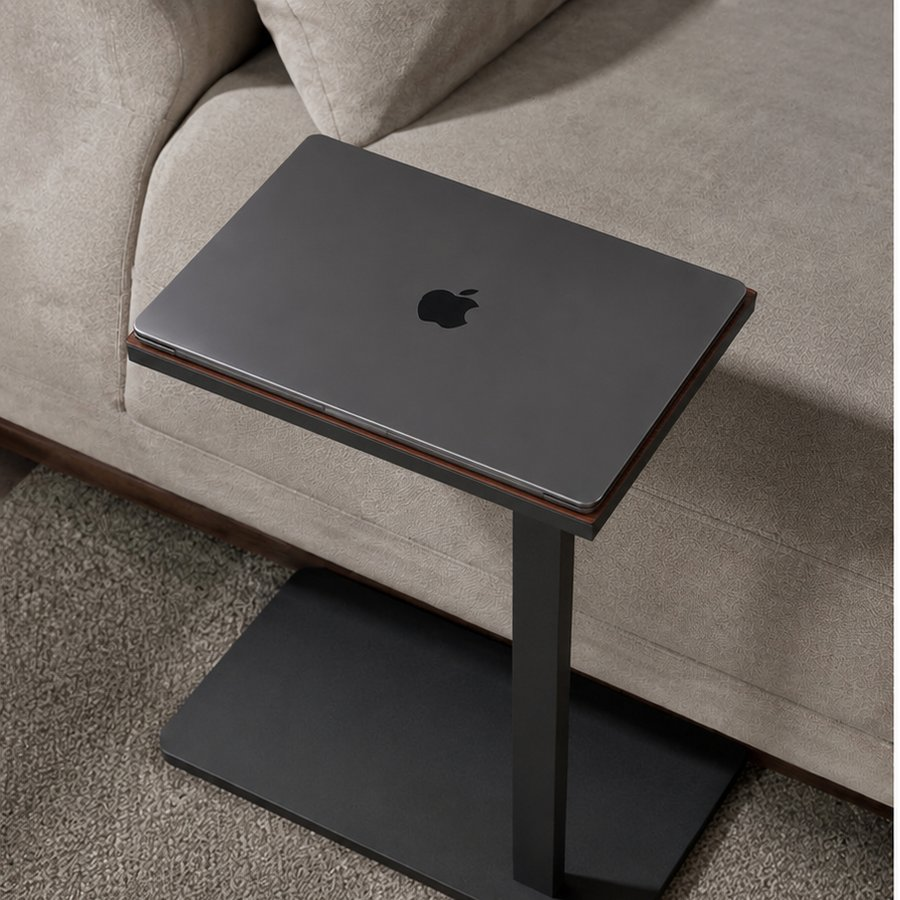
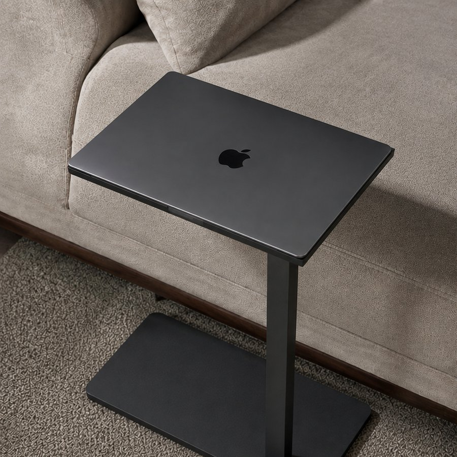

Walnut
A warm edge, cut from solid walnut.
Side tables, for exactly one thing
A surface cut to the footprint of a closed MacBook — flush to the edge, held by design. Nothing else fits, and nothing else is needed.
See how it locks
The idea
Most side tables try to hold everything. Ours holds one thing, perfectly.
No lip for a coffee cup. No dish for keys, no shelf for a phone. Just a flush, locked surface — exactly the size of a closed laptop, and nothing more.
Anatomy
Hover to lock ↴
Every dimension is drawn from the MacBook itself — down to the millimetre between its feet.
Material

A warm edge, cut from solid walnut.

Deep red-brown, cut from solid mahogany.

Lacquered black — the edge disappears.
Each Viento table is cut, sanded and fitted by hand. Currently taking orders for late 2026.
hello@viento.co